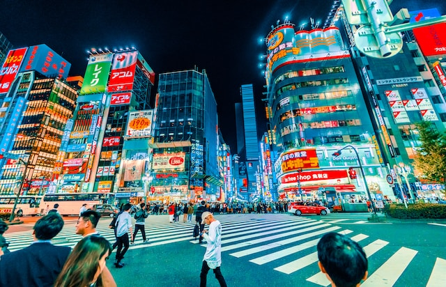
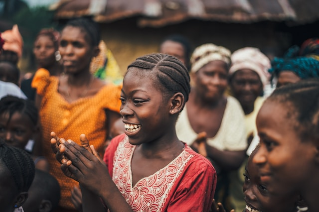
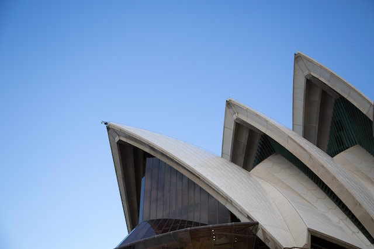

Asia

Stepping into China's ancient heart, the Palace of China is a mesmerizing journey through time. Its ornate architecture and vivid colors tell tales of emperors' reigns. Exploring the Forbidden City, one feels the weight of history in every step, a must-visit for any traveler in Beijing
Tokyo's bustling streets are a captivating blend of tradition and modernity. Neon signs illuminate the urban canyons, while ancient temples offer moments of serenity. Exploring Tsukiji Fish Market's chaotic energy and strolling through the serene gardens of Meiji Shrine create an unforgettable Tokyo experience.
Nestled amidst Kenya's stunning landscapes, this village is a hidden gem. Surrounded by lush greenery and vibrant wildlife, it offers an authentic cultural experience. Engage with friendly locals, savor traditional cuisine, and immerse yourself in the vibrant traditions of this enchanting Kenyan village. A true African adventure awaits.
Embarking on a safari in Zimbabwe was a thrilling adventure like no other. From the moment we entered Hwange National Park, the sheer diversity of wildlife took our breath away. Lions prowling, elephants majestically roaming, and vibrant birdlife made it an unforgettable journey into the heart of Africa's untamed beauty.
Standing tall in New York Harbor, the Statue of Liberty is an iconic symbol of freedom and democracy. A gift from France to the United States in 1886, Lady Liberty welcomes visitors with her torch and crown, offering breathtaking views of Manhattan and a poignant reminder of America's values.
Washington, D.C. is a captivating blend of history and modernity. The city's iconic monuments, like the Lincoln Memorial and the Washington Monument, stand as tributes to America's past. Yet, amidst the historic backdrop, vibrant neighborhoods, world-class museums, and diverse dining options showcase the city's dynamic present.

Venturing into the eucalyptus-scented wilderness of Australia, we had one goal: to spot elusive koala bears in their natural habitat. With patience and binoculars in hand, we scanned the treetops. Suddenly, a sleepy koala came into view, clinging to a gum tree, a serene icon of Australian wildlife.
Standing on the shimmering shores of Sydney Harbour, the Sydney Opera House is a mesmerizing masterpiece of modern architecture. Its iconic sail-like shells make it a global symbol of art and culture. A visit here is a sensory journey, blending stunning design with world-class performances in a setting unlike any other.

Nestled along the sun-kissed Atlantic coast, Portugal's coastal city is a hidden gem. With its golden beaches, charming fishing villages, and delectable seafood cuisine, it's a paradise for beach lovers. Explore historic architecture, sip on local wines, and soak in the coastal beauty that defines this enchanting Portuguese destination.

In the heart of Paris, the Eiffel Tower stands tall, a majestic testament to architectural brilliance. As I gazed up, the iron lattice structure sparkled in the afternoon sun, and I couldn't help but feel the city's romantic charm enveloping me. Paris truly lives up to its reputation.